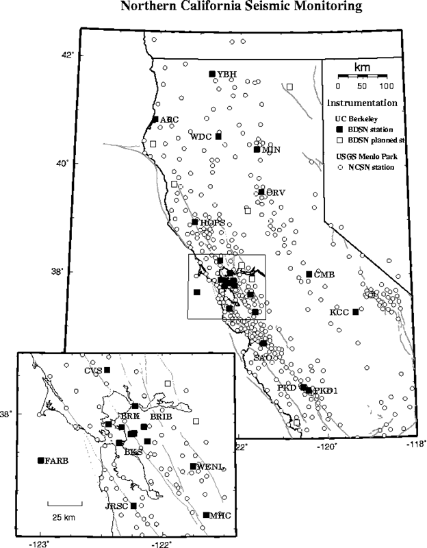
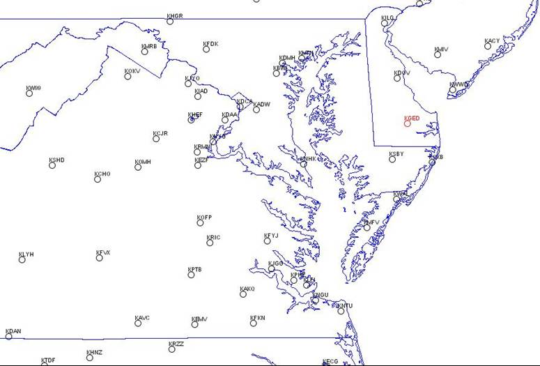
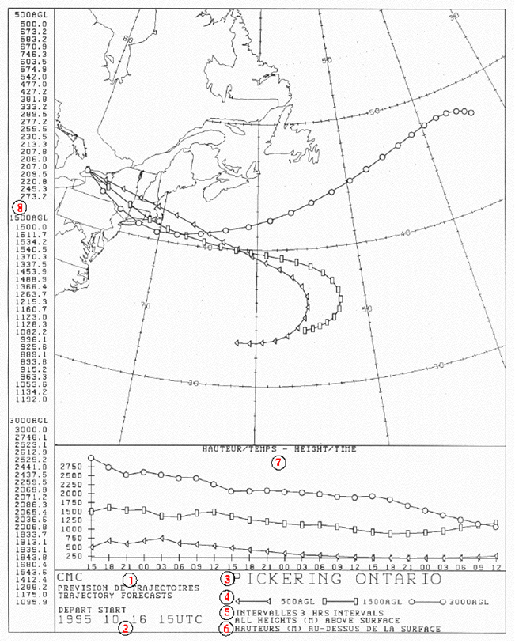

Tutorial: Observation Scientific Datatypes
An observation is a collection of measurements at one time and location.
Several types of observation collections are described in the Common Data Model Scientific Datatype layer. A Point Observation dataset contains observations which are not necessarily
related in space or time. A Station Observation dataset contains time series of
observations at named locations called stations. A trajectory
is a collection of observations which are connected along a one
dimensional track in space, with time increasing monotonically along
the track. A Trajectory Observation dataset contains one or more
trajectories.

Opening and using a *ObsDataset
Point Obs Dataset
Station Obs Dataset
Trajectory Obs Dataset



